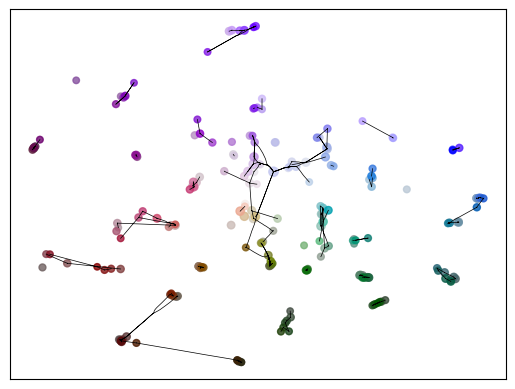
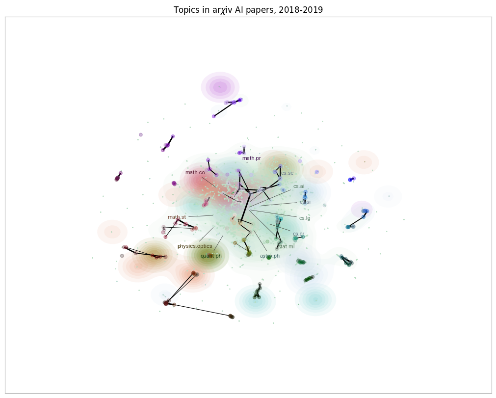
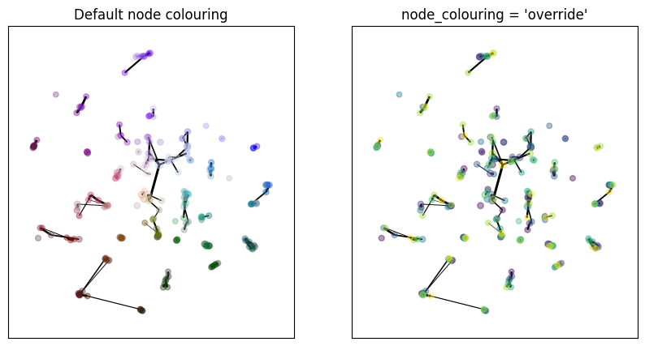

Centroid Datamap
Temporal Mapper constructs a graph which does not have an inherent visualization. Moreover, if your data has \(d\) semantic dimensions, then the graph ‘naturally’ lives in \(d+1\) dimensions when including time.
A centroid datamap of a TemporalMapper is a 2d plot where each vertex is plotted on the centroid of its constituent points.
Let’s demonstrate a centroid datamap by fitting a TemporalMapper to a small dataset of 10,000 arXiv machine learning papers. The paper’s titles and abstracts were concatenated and embedded using the sentence transformer all-mpnet-base-v2, and then reduced to 2D with UMAP.
[31]:
import temporalmapper as tm
import numpy as np
import pandas as pd
import matplotlib.pyplot as plt
import requests, io
from sklearn.cluster import DBSCAN
from fast_hdbscan import HDBSCAN
import datamapplot as dmp
[32]:
response = requests.get(
'https://github.com/TutteInstitute/temporal-mapper/raw/refs/heads/docs/docs/data/ai_arxiv_coordinates.npy'
)
map_data = np.load(io.BytesIO(response.content))
response = requests.get(
'https://github.com/TutteInstitute/temporal-mapper/raw/refs/heads/docs/docs/data/ai_arxiv_data.feather'
)
df = pd.read_feather(io.BytesIO(response.content))
df.head()
[32]:
| title | abstract | id | created | authors | arxiv | doi | |
|---|---|---|---|---|---|---|---|
| 0 | automated rating of recorded classroom present... | effective presentation skills can help to succ... | 1801.00453 | 2018-01-01 | [akzharkyn izbassarova, aidana irmanova, a. p.... | cs.ai | 10.1109/icacci.2017.8125872 |
| 1 | accelerating deep learning with memcomputing | restricted boltzmann machines (rbms) and their... | 1801.00512 | 2018-01-01 | [haik manukian, fabio l. traversa, massimilian... | cs.ai | |
| 2 | accelerating deep learning with memcomputing | restricted boltzmann machines (rbms) and their... | 1801.00512 | 2018-01-01 | [haik manukian, fabio l. traversa, massimilian... | cs.lg | |
| 3 | accurate reconstruction of image stimuli from ... | in neuroscience, all kinds of computation mode... | 1801.00602 | 2018-01-02 | [kai qiao, chi zhang, linyuan wang, bin yan, j... | cs.ai | |
| 4 | deep learning: a critical appraisal | although deep learning has historical roots go... | 1801.00631 | 2018-01-02 | [gary marcus] | cs.lg |
[33]:
# Compute a time column T which is the number of days since Jan 01, 2018.
def date_to_T(date):
d0 = pd.Timestamp('2018-01-01')
delta = date-d0
return delta.days
df["date"] = pd.to_datetime(df["created"])
df["T"] = df["date"].apply(
lambda x: date_to_T(x)
)
time = df["T"].to_numpy()
[34]:
clusterer = HDBSCAN(
cluster_selection_method='eom',
min_cluster_size=20,
)
mapper = tm.TemporalMapper(
time,
map_data,
clusterer,
slice_method = 'data',
N_checkpoints = 8,
kernel=tm.kernels.square
)
mapper.fit()
[34]:
TemporalMapper(N_checkpoints=8,
checkpoints=array([ 66, 131, 169, 226, 276, 301, 372, 428]),
clusterer=HDBSCAN(min_cluster_size=20),
data=array([[-0.1915403 , -0.91268927],
[-0.855696 , -1.3008769 ],
[-0.8569798 , -1.3025715 ],
...,
[ 0.9540829 , 1.0763897 ],
[ 0.9528436 , 1.0777863 ],
[ 0.9529141 , 1.0776262 ]], shape=(10000, 2), dtype=float32),
slice_method='data',
time=array([ 0, 0, 0, ..., 480, 480, 480], shape=(10000,)))In a Jupyter environment, please rerun this cell to show the HTML representation or trust the notebook. On GitHub, the HTML representation is unable to render, please try loading this page with nbviewer.org.
Parameters
| time | array([ 0, ...hape=(10000,)) | |
| data | array([[-0.19...dtype=float32) | |
| clusterer | HDBSCAN(min_cluster_size=20) | |
| N_checkpoints | 8 | |
| neighbours | 50 | |
| overlap | 0.5 | |
| inclusion_threshold | 0.01 | |
| checkpoints | array([ 66, 1...01, 372, 428]) | |
| show_outliers | False | |
| slice_method | 'data' | |
| rate_sensitivity | 1 | |
| kernel | <function squ...x7f10ff7b2160> | |
| kernel_params | None | |
| verbose | False |
HDBSCAN(min_cluster_size=20)
Parameters
| min_cluster_size | 20 | |
| min_samples | None | |
| cluster_selection_method | 'eom' | |
| allow_single_cluster | False | |
| max_cluster_size | inf | |
| cluster_selection_epsilon | 0.0 | |
| cluster_selection_persistence | 0.0 | |
| semi_supervised | False | |
| ss_algorithm | 'bc' |
Now that we’ve fit a temporal Mapper, we can use centroid_datamap from temporal_mapper.utilities
[35]:
tm.plotting.centroid_datamap(mapper)
[35]:
<Axes: >

The optional ax parameter can be passed to add a centroid datamap to an existing matplotlib axis. In particular, the centroid_datamap is designed to be added on top of a DataMapPlot plot of the cluster points, if one so desires:
[36]:
import datamapplot as dmp
fig, ax = dmp.create_plot(
mapper.data,
df['arxiv'].to_list(),
)
tm.plotting.centroid_datamap(mapper, ax=ax, bundle=False)
fig.set_figwidth(10)
fig.set_figheight(8)
ax.set_title("Topics in ar$\chi$iv AI papers, 2018-2019")
plt.show()

By default, the centroid datamap matches colours with the temporal plot, to make it easier to relate the plots when viewing them side-by-side. To help convey the time information, vertices which correspond to earlier slices in the graph have their colour desaturated. This is a very subtle effect, so if you want to make the order of the vertices more obvious you can pass the option node_colouring = 'override'. This overrides the datamapplot colours, instead colouring vertices from dark to
light as you move from the beginning to end of the time range.
[37]:
fig, (ax1, ax2) = plt.subplots(1,2)
tm.plotting.centroid_datamap(
mapper,
ax=ax1,
node_colouring = 'desaturate',
bundle=False
)
ax1.set_title("Default node colouring")
tm.plotting.centroid_datamap(
mapper,
ax=ax2,
node_colouring = 'override',
bundle=False,
)
ax2.set_title("node_colouring = 'override'")
fig.set_figwidth(10)
fig.set_figheight(5)
plt.show()
